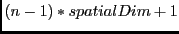
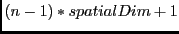

|
Key Features |
| Hierarchy of data structures designed specifically for the Earth system domain and high performance, parallel computing. |
| Multi-use ESMF structures simplify user code overall. |
| Data objects support incremental construction and deferred allocation. |
| Native Fortran arrays can be associated with or retrieved from ESMF data objects, for ease of adoption, convenience, and performance. |
An ESMF Field represents a physical field, such as temperature. The motivation for including Fields in ESMF is that bundles of Fields are the entities that are normally exchanged when coupling Components.
The ESMF Field class contains distributed and discretized field data, a reference to its associated grid, and metadata. The Field class stores the grid staggering for that physical field. This is the relationship of how the data array of a field maps onto a grid (e.g. one item per cell located at the cell center, one item per cell located at the NW corner, one item per cell vertex, etc.). This means that different Fields which are on the same underlying ESMF Grid but have different staggerings can share the same Grid object without needing to replicate it multiple times.
Fields can be added to States for use in inter-Component data communications.
Field communication capabilities include: data redistribution, regridding, scatter, gather, sparse-matrix multiplication, and halo update. These are discussed in more detail in the documentation for the specific method calls. ESMF does not currently support vector fields, so the components of a vector field must be stored as separate Field objects.
A Field serves as an annotator of data, since it carries a description of the grid it is associated with and metadata such as name and units. Fields can be used in this capacity alone, as convenient, descriptive containers into which arrays can be placed and retrieved. However, for most codes the primary use of Fields is in the context of import and export States, which are the objects that carry coupling information between Components. Fields enable data to be self-describing, and a State holding ESMF Fields contains data in a standard format that can be queried and manipulated.
The sections below go into more detail about Field usage.
Fields can be created and destroyed at any time during application execution. However, these Field methods require some time to complete. We do not recommend that the user create or destroy Fields inside performance-critical computational loops.
All versions of the ESMC_FieldCreate() routines require a Mesh object as input. The Mesh contains the information needed to know which Decomposition Elements (DEs) are participating in the processing of this Field, and which subsets of the data are local to a particular DE.
The details of how the create process happens depends on which of the variants of the ESMC_FieldCreate() call is used.
When finished with an ESMC_Field, the ESMC_FieldDestroy method removes it. However, the objects inside the ESMC_Field created externally should be destroyed separately, since objects can be added to more than one ESMC_Field. For example, the same ESMF_Mesh can be referenced by multiple ESMC_Fields. In this case the internal Mesh is not deleted by the ESMC_FieldDestroy call.
INTERFACE:
ESMC_Field ESMC_FieldCreate( ESMC_Mesh mesh, // in ESMC_ArraySpec arrayspec, // in ESMC_InterfaceInt gridToFieldMap, // in ESMC_InterfaceInt ungriddedLBound, // in ESMC_InterfaceInt ungriddedUBound, // in const char *name, // in int *rc // out );RETURN VALUE:
Newly created ESMC_Field object.DESCRIPTION:
Creates a ESMC_Field object.
The arguments are:
INTERFACE:
int ESMC_FieldDestroy( ESMC_Field *field // inout );RETURN VALUE:
Return code; equals ESMF_SUCCESS if there are no errors.DESCRIPTION:
Releases all resources associated with this ESMC_Field. Return code; equals ESMF_SUCCESS if there are no errors.
The arguments are:
INTERFACE:
ESMC_Array ESMC_FieldGetArray( ESMC_Field field, // in int *rc // out );RETURN VALUE:
The ESMC_Array object stored in the ESMC_Field.DESCRIPTION:
Get the internal Array stored in the ESMC_Field.
The arguments are:
INTERFACE:
ESMC_Mesh ESMC_FieldGetMesh( ESMC_Field field, // in int *rc // out );RETURN VALUE:
The ESMC_Mesh object stored in the ESMC_Field.DESCRIPTION:
Get the internal Mesh stored in the ESMC_Field.
The arguments are:
INTERFACE:
void *ESMC_FieldGetPtr( ESMC_Field field, // in int localDe, // in int *rc // out );RETURN VALUE:
The Fortran data pointer stored in the ESMC_Field.DESCRIPTION:
Get the internal Fortran data pointer stored in the ESMC_Field.
The arguments are:
INTERFACE:
int ESMC_FieldPrint( ESMC_Field field // in );RETURN VALUE:
Return code; equals ESMF_SUCCESS if there are no errors.DESCRIPTION:
Print the internal information within this ESMC_Field. Return code; equals ESMF_SUCCESS if there are no errors.
The arguments are:
The Array class is an alternative to the Field class for representing distributed, structured data. Unlike Fields, which are built to carry grid coordinate information, Arrays can only carry information about the indices associated with grid cells. Since they do not have coordinate information, Arrays cannot be used to calculate interpolation weights. However, if the user can supply interpolation weights, the Array sparse matrix multiply operation can be used to apply the weights and transfer data to the new grid. Arrays can also perform redistribution, scatter, and gather communication operations.
Like Fields, Arrays can be added to a State and used in inter-Component data communications.
From a technical standpoint, the ESMF Array class is an index space based, distributed data storage class. It provides DE-local memory allocations within DE-centric index regions and defines the relationship to the index space described by the ESMF DistGrid. The Array class offers common communication patterns within the index space formalism.
INTERFACE:
ESMC_Array ESMC_ArrayCreate( ESMC_ArraySpec arrayspec, // in ESMC_DistGrid distgrid, // in const char* name, // in int *rc // out );RETURN VALUE:
Newly created ESMC_Array object.DESCRIPTION:
Create an ESMC_Array object.
The arguments are:
INTERFACE:
int ESMC_ArrayDestroy( ESMC_Array *array // inout );RETURN VALUE:
Return code; equals ESMF_SUCCESS if there are no errors.DESCRIPTION:
Destroy an ESMC_Array object.
The arguments are:
INTERFACE:
const char *ESMC_ArrayGetName( ESMC_Array array, // in int *rc // out );RETURN VALUE:
Pointer to the Array name string.DESCRIPTION:
Get the name of the specified ESMC_Array object.
The arguments are:
INTERFACE:
void *ESMC_ArrayGetPtr( ESMC_Array array, // in int localDe, // in int *rc // out );RETURN VALUE:
Pointer to the Array data.DESCRIPTION:
Get pointer to the data of the specified ESMC_Array object.
The arguments are:
INTERFACE:
int ESMC_ArrayPrint( ESMC_Array array // in );RETURN VALUE:
Return code; equals ESMF_SUCCESS if there are no errors.DESCRIPTION:
Print internal information of the specified ESMC_Array object.
The arguments are:
An ArraySpec is a very simple class that contains type, kind, and rank information about an Array. This information is stored in two parameters. TypeKind describes the data type of the elements in the Array and their precision. Rank is the number of dimensions in the Array.
The only methods that are associated with the ArraySpec class are those that allow you to set and retrieve this information.
INTERFACE:
int ESMC_ArraySpecGet( ESMC_ArraySpec arrayspec, // inout int *rank, // in enum ESMC_TypeKind *typekind // in );RETURN VALUE:
Return code; equals ESMF_SUCCESS if there are no errors.DESCRIPTION:
Returns information about the contents of an ESMC_ArraySpec.
The arguments are:
INTERFACE:
int ESMC_ArraySpecSet( ESMC_ArraySpec *arrayspec, // inout int rank, // in enum ESMC_TypeKind typekind // in );RETURN VALUE:
Return code; equals ESMF_SUCCESS if there are no errors.DESCRIPTION:
Set an Array specification - typekind, and rank.
The arguments are:
Unstructured grids are commonly used in the computational solution of Partial Differential equations. These are especially useful for problems that involve complex geometry, where using the less flexible structured grids can result in grid representation of regions where no computation is needed. Finite element and finite volume methods map naturally to unstructured grids and are used commonly in hydrology, ocean modeling, and many other applications.
In order to provide support for application codes using unstructured grids, the ESMF library provides a class for representing unstructured grids called the Mesh. Fields can be created on a Mesh to hold data. In Fortran, Fields created on a Mesh can also be used as either the source or destination or both of an interpolaton (i.e. an ESMF_FieldRegridStore() call). This capability is currently not supported with the C interface, however, if the C Field is passed via a State to a component written in Fortran then the regridding can be performed there. The rest of this section describes the Mesh class and how to create and use them in ESMF.
A Mesh in ESMF is described in terms of nodes and elements. A node is a point in space which represents where the coordinate information in a Mesh is located. An element is a higher dimensional shape constructed of nodes. Elements give a Mesh its shape and define the relationship of the nodes to one another. Field data may be located on a Mesh's nodes.
The range of Meshes supported by ESMF are defined by several factors: dimension, element types, and distribution.
ESMF currently only supports Meshes whose number of coordinate dimensions (spatial dimension) is 2 or 3. The dimension of the elements in a Mesh (parametric dimension) must be less than or equal to the spatial dimension, but also must be either 2 or 3. This means that an ESMF mesh may be either 2D elements in 2D space, 3D elements in 3D space, or a manifold constructed of 2D elements embedded in 3D space.
ESMF currently supports two types of elements for each Mesh parametric dimension. For a parametric dimension of 2 the supported element types are triangles or quadralaterals. For a parametric dimension of 3 the supported element types are tetrahedrons and hexahedrons. See Section 19.2.1 for diagrams of these. The Mesh supports any combination of element types within a particular dimension, but types from different dimensions may not be mixed, for example, a Mesh cannot be constructed of both quadralaterals and tetrahedra.
ESMF currently only supports distributions where every node on a PET must be a part of an element on that PET. In other words, there must not be nodes without an element on a PET.
DESCRIPTION:
An ESMF Mesh can be constructed from a combination of different elements. The type of elements that can
be used in a Mesh depends on the Mesh's parameteric dimension, which is set during Mesh creation. The
following are the valid Mesh element types for each valid Mesh parametric dimension (2D or 3D) .
3 4 ---------- 3
/ \ | |
/ \ | |
/ \ | |
/ \ | |
/ \ | |
1 --------- 2 1 ---------- 2
ESMC_MESHELEMTYPE_TRI ESMC_MESHELEMTYPE_QUAD
2D element types (numbers are the order for elementConn during
Mesh create)
For a Mesh with parametric dimension of 2 the valid element types (illustrated above) are:
| Element Type | Number of Nodes | Description |
| ESMC_MESHELEMTYPE_TRI | 3 | A triangle |
| ESMC_MESHELEMTYPE_QUAD | 4 | A quadrilateral (e.g. a rectangle) |
3 8---------------7
/|\ /| /|
/ | \ / | / |
/ | \ / | / |
/ | \ / | / |
/ | \ 5---------------6 |
4-----|-----2 | | | |
\ | / | 4----------|----3
\ | / | / | /
\ | / | / | /
\ | / | / | /
\|/ |/ |/
1 1---------------2
ESMC_MESHELEMTYPE_TETRA ESMC_MESHELEMTYPE_HEX
3D element types (numbers are the order for elementConn during
Mesh create)
For a Mesh with parametric dimension of 3 the valid element types (illustrated above) are:
| Element Type | Number of Nodes | Description |
| ESMC_MESHELEMTYPE_TETRA | 4 | A tetrahedron (CAN'T BE USED IN REGRID) |
| ESMC_MESHELEMTYPE_HEX | 8 | A hexahedron (e.g. a cube) |
INTERFACE:
int ESMC_MeshAddElements( ESMC_Mesh mesh, // inout int elementCount, // in int *elementIds, // in int *elementTypes, // in int *elementConn // in );RETURN VALUE:
Return code; equals ESMF_SUCCESS if there are no errors.DESCRIPTION:
This call is the third and last part of the three part mesh create sequence and should be called after the mesh is created with ESMF_MeshCreate() (19.3.3) and after the nodes are added with ESMF_MeshAddNodes() (19.3.2). This call adds the elements to the mesh and finalizes the create. After this call the Mesh is usable, for example a Field may be built on the created Mesh object and this Field may be used in a ESMF_FieldRegridStore() call.
The parameters to this call elementIds, elementTypes, and
elementConn describe the elements to be created. The description
for a particular element lies at the same index location in elementIds
and elementTypes. Each entry in elementConn consists of the list of
nodes used to create that element, so the connections for element in the
elementIds array will start at
 in elementConn.
in elementConn.
![[*]](crossref.png) for the list of options. This
input consists of a 1D array of size elementCount.
for diagrams illustrating
the correct order of nodes in a element. This input consists of a 1D array with
a total size equal to the sum of the number of nodes in each element on
this PET. The number of nodes in each element is implied by its element type in
elementTypes. The nodes for each element
are in sequence in this array (e.g. the nodes for element 1 are elementConn(1),
elementConn(2), etc.).
for the list of options. This
input consists of a 1D array of size elementCount.
for diagrams illustrating
the correct order of nodes in a element. This input consists of a 1D array with
a total size equal to the sum of the number of nodes in each element on
this PET. The number of nodes in each element is implied by its element type in
elementTypes. The nodes for each element
are in sequence in this array (e.g. the nodes for element 1 are elementConn(1),
elementConn(2), etc.).
INTERFACE:
int ESMC_MeshAddNodes( ESMC_Mesh mesh, // inout int nodeCount, // in int *nodeIds, // in double *nodeCoords, // in int *nodeOwners // in );RETURN VALUE:
Return code; equals ESMF_SUCCESS if there are no errors.DESCRIPTION:
This call is the second part of the three part mesh create sequence and should be called after the mesh's dimensions are set using ESMC_MeshCreate(). This call adds the nodes to the mesh. The next step is to call ESMC_MeshAddElements() (19.3.3).
The parameters to this call nodeIds, nodeCoords, and
nodeOwners describe the nodes to be created on this PET.
The description for a particular node lies at the same index location in
nodeIds and nodeOwners. Each entry
in nodeCoords consists of spatial dimension coordinates, so the coordinates
for node  in the nodeIds array will start at
.
in the nodeIds array will start at
.
INTERFACE:
ESMC_Mesh ESMC_MeshCreate( int parametricDim, // in int spatialDim, // in int *rc // out );RETURN VALUE:
type(ESMC_Mesh) :: ESMC_MeshCreateDESCRIPTION:
This call is the first part of the three part mesh create sequence. This call sets the dimension of the elements in the mesh (parametricDim) and the number of coordinate dimensions in the mesh (spatialDim). The next step is to call ESMC_MeshAddNodes() (19.3.2) to add the nodes and then ESMC_MeshAddElements() (19.3.1) to add the elements and finalize the mesh.
The arguments are:
INTERFACE:
int ESMC_MeshDestroy( ESMC_Mesh *mesh // in );RETURN VALUE:
Return code; equals ESMF_SUCCESS if there are no errors.DESCRIPTION:
Destroy the Mesh. This call removes all internal memory associated with mesh. After this call mesh will no longer be usable.
The arguments are:
INTERFACE:
int ESMC_MeshFreeMemory( ESMC_Mesh mesh // in );RETURN VALUE:
Return code; equals ESMF_SUCCESS if there are no errors.DESCRIPTION:
This call removes the portions of mesh which contain connection and coordinate information. After this call, Fields build on mesh will no longer be usable as part of an ESMF_FieldRegridStore() operation. However, after this call Fields built on mesh can still be used in an ESMF_FieldRegrid() operation if the routehandle was generated beforehand. New Fields may also be built on mesh after this call.
The arguments are:
INTERFACE:
int ESMC_MeshGetLocalElementCount( ESMC_Mesh mesh, // in int *elementCount // out );RETURN VALUE:
Return code; equals ESMF_SUCCESS if there are no errors.DESCRIPTION:
Query the number of elements in a mesh owned by the local PET. The arguments are:
INTERFACE:
int ESMC_MeshGetLocalNodeCount( ESMC_Mesh mesh, // in int *nodeCount // out );RETURN VALUE:
Return code; equals ESMF_SUCCESS if there are no errors.DESCRIPTION:
Query the number of nodes in a mesh owned by the local PET. The arguments are:
The ESMF DistGrid class sits on top of the DELayout class (not currently directly accessible through the ESMF C API) and holds domain information in index space. A DistGrid object captures the index space topology and describes its decomposition in terms of DEs. Combined with DELayout and VM the DistGrid defines the data distribution of a domain decomposition across the computational resources of an ESMF Component.
The global domain is defined as the union or ``tilework'' of logically rectangular (LR) sub-domains or tiles. The DistGrid create methods allow the specification of such a tilework global domain and its decomposition into exclusive, DE-local LR regions according to various degrees of user specified constraints. Complex index space topologies can be constructed by specifying connection relationships between tiles during creation.
The DistGrid class holds domain information for all DEs. Each DE is associated with a local LR region. No overlap of the regions is allowed. The DistGrid offers query methods that allow DE-local topology information to be extracted, e.g. for the construction of halos by higher classes.
A DistGrid object only contains decomposable dimensions. The minimum rank for a DistGrid object is 1. A maximum rank does not exist for DistGrid objects, however, ranks greater than 7 may lead to difficulties with respect to the Fortran API of higher classes based on DistGrid. The rank of a DELayout object contained within a DistGrid object must be equal to the DistGrid rank. Higher class objects that use the DistGrid, such as an Array object, may be of different rank than the associated DistGrid object. The higher class object will hold the mapping information between its dimensions and the DistGrid dimensions.
INTERFACE:
ESMC_DistGrid ESMC_DistGridCreate( ESMC_InterfaceInt minIndexInterfaceArg, // in ESMC_InterfaceInt maxIndexInterfaceArg, // in int *rc // out );RETURN VALUE:
Newly created ESMC_DistGrid object.DESCRIPTION:
Create an ESMC_DistGrid from a single logically rectangular (LR) tile with default decomposition. The default decomposition is deCount , where deCount is the number of DEs in a default DELayout, equal to petCount. This means that the default decomposition will be into as many DEs as there are PETs, with 1 DE per PET.
The arguments are:
INTERFACE:
int ESMC_DistGridDestroy( ESMC_DistGrid *distgrid // inout );RETURN VALUE:
Return code; equals ESMF_SUCCESS if there are no errors.DESCRIPTION:
Destroy an ESMC_DistGrid object.
The arguments are:
INTERFACE:
int ESMC_DistGridPrint( ESMC_DistGrid distgrid // in );RETURN VALUE:
Return code; equals ESMF_SUCCESS if there are no errors.DESCRIPTION:
Print internal information of the specified ESMC_DistGrid object.
The arguments are: